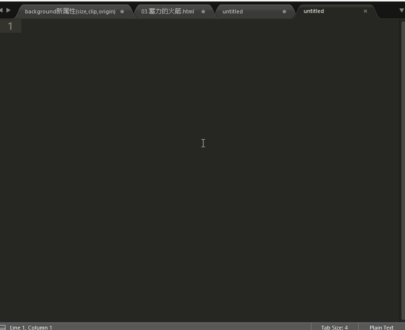

常用插件
- 必须先安装 Package Control
插件安装的方法
ctrl+shift+p 输入 install package 回车
输入插件的名字 即可安装

- AutoFileName
- 根据 打开的文件 进行提示
- BracketHighlighter
- 高亮 选中的括号
- CSS3
- CSS3的样式
- DocBlockr
- 函数注释插件
- Emmet
- Emmet语法
- HTML5
- HTML5的一些内容
- SideBarEnhancements
- 侧边栏增强
- sublimeCodeintel
- 提示
- html-css-js-prettify
- ctrl +shift +h 可以格式化代码
- javascript & Nodejs Snippets
- 有很多的 快捷编码 比如
- 可以通过 ctrl+shift +p 输入snippets 查看
- jquery
- 对于jquery的一些提示
- all autocomplete
- 自动提示
- 更多插件
- 可以去下面的网站进行插件,建议看
popular里面的插件,排名靠前的一般都不错 sublime插件网站
- 可以去下面的网站进行插件,建议看
- sublime学习网站